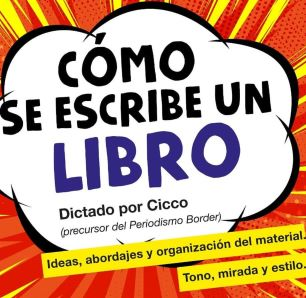
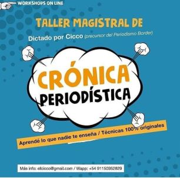
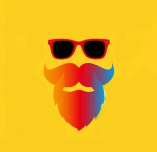

Sobre
Mí
Emilio Fernández Cicco –más conocido como Cicco a secas- pionero del periodismo border, se inició en la orden sufi Naqshbandi y recibió el nombre de Abdul Wakil. Se fue a vivir a Lobos, una ciudad pequeña a dos horas de Buenos Aires.
Cicco ganó fama por notas en las que pone el cuerpo y desmitifica celebridades. Admirador del maestro del gonzo Hunter Thompson, vivió, por dentro, el budismo zen y el mundo del porno, fue asistente de la Hiena Barrios en un ring de box y trabajó como enterrador en el cementerio más grande de Latinoamérica. Compiló sus crónicas en “Yo fui un porno star”.
Desde su casa lobense brinda tutorías periodísticas on line en todo el mundo de habla hispana. También dictó un taller de periodismo gonzo en el Centro Knight para Periodismo en las Américas de la Universidad de Texas y un seminario de periodismo de investigación para la ONU, en la ciudad de Panamá.
Cicco-Abdul Wakil aprendió árabe para leer el Corán en su lengua original. Reza cinco veces al día, cultiva una huerta, sigue las enseñanzas de su maestro y se lo ve feliz de la vida.
Algunas
Obras
Rock and Roll Islam
La conversión menos pensadaUna autobiografía espiritual donde Cicco cuenta su transformación en el sufí Abdul Wakil. Impregnado de historias fabulosas de sufis que suceden a la vuelta de la esquina. Una reliquia del Profeta Muhammad guardada en la Patagonia Argentina. Las peripecias de un líder musulmán que auguraba el fin del mundo y planeó un éxodo con su grupo. La historia del primer y único memorizador del Corán en Latinoamérica.
El Secreto de Cortazar
Antes de transformarse en escritor, Julio Cortázar fue maestro de es escuelas en el interior de la Argentina. Este paso desconocido de Cortázar forjó su identidad y plasmó el sello de su futuro mundo creativo. De Bolívar, a Chivilcoy y Mendoza, donde acabó tomando la universidad de Cuyo con los alumnos. Una aventura que Cortázar recordaría toda su vida. Y que marcó a fuego a una generación de alumnos que, Cicco pudo entrevistar ya ancianos.
Gurdjieff para principiantes
Un maestro esotérico que sobrevivió a guerras, exilios y matanzas, y se nutrió de maestros y órdenes escondidas en Asia para consolidar sus enseñanzas que, al día de hoy, siguen estudiadas y debatidas. La vida del precursor del Cuarto Camino y divulgador del eneagrama, es un misterio insondable que él mismo se ocupó en crear.
Zen para principiantes
La historia del budismo zen en clave de cómic. Un viaje por un camino anárquico y fabuloso que impregnó no sólo al budismo sino a un sinfín de terapias y artistas. Maestros más allá del bien y del mal.

Rodrigo Superstar
La biografía más vertiginosa y contundente del músico Rodrigo “Potro” Bueno, que perdió la vida en un misterioso accidente a los 27 años. Su relación con Maradona. La explotación de la música tropical. Su segunda personalidad escondida. Sus giras maratónicas donde llegó a dar 11 shows en una noche. Quién era y cómo murió el “cuartetero” más carismático de la historia.
Yo Fui Un Porno Star
Y otras crónicas de lujuria y demenciaUna selección de las crónicas más alocadas e irreverentes de Cicco que abarcan un período de 20 años de periodismo. Su famosa inmersión en el mundo de la pornografía. Hasta un paso como enterrador en el cementerio. Sus crónicas memorables a artistas, conductores de tevé y gurúes que le valieron numerosos enemigos en el ambiente. Un puñado de lo mejor del género que bautizó el propio Cicco: el periodismo border. Y cuyo manifiesto se incluye aquí.
Trayectoria
Profesional
Considerado uno de los periodistas de habla hispana más descarados del último siglo. Se recibió con diploma de honor en la Universidad de Belgrano y es creador de un género propio: el periodismo border, donde fue actor XXX, enterrador de cementerios y asistente de boxeo. Sus artículos son reproducidos en medios de los Estados Unidos, Colombia, Brasil, Panamá, Chile, México, Uruguay y la Argentina. En reconocimiento a su labor, obtuvo el Premio Pléyade, el Estímulo de la Escuela de Periodismo Tea, el Premio Emerald (la productora de cine condicionado que lo empleó como actor) y se ganó infinidad de enemigos. Desde hace veinte años Cicco ejerce la docencia. Siempre le interesó compartir con otros los conocimientos que ha acumulado en su carrera. Al mismo tiempo es una forma de sistematizar las herramientas que va encontrando en el camino. Logros no le faltan. Además de haber publicado en las mejores revistas de habla hispana, ha obtenido el Premio Pléyade de la Asociación Argentina de Revistas (1999) y el Premio Estímulo a la excelencia periodística de la Escuela de Periodismo TEA.
Clases
Talleres
-

Acompañamiento en proyectos de libros
Todo el añoEsta asesoría consiste en un acompañamiento integral desde la idea misma de libro hasta la escritura del punto final. Desde el planteo de la estructura, tono y propuesta de fondo, hasta la concepción del título, contratapa y venta al sello editorial.
-

Taller de crónica periodística
Comienzo febrero 2021Tips, estrategias, trucos narrativos y malabares creativos para transformar una crónica en un texto con swing, onda y demases. Cómo inyectar velocidad, estilo y mirada de autor. El eslabón perdido de los talleres de escritura: las técnicas que nadie te enseña y hacen que tu firma empiece a valer en el mercado.
Modalidad: Grupal. Duración: 12 clases. -

Clases individuales de crónica y escritura creativa
Todo el añoUn programa adecuado a las necesidades del autor. Cómo escribir un cuento. Una novela. Una crónica periodística. Y conocer los resortes que hacen a uno y otro género eficaz. Cómo transformarse en un autor profesional. Cómo bajar de la idea, la reflexión y la mirada, al papel.
Se brindarán herramientas que no se enseñan en ningún taller ni universidad. Y que Cicco aplica con éxito en alumnos desde hace 17 años.
Duración: 12 clases.
Contacto
Redes Sociales
Para más información sobre cursos y talleres, contactate a la siguiente dirección:
Email: efcicco@gmail.com
Seguime en mis redes sociales: